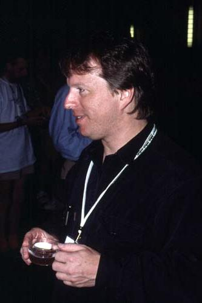

| First Slide | Conference Presentation Judo | (Notes) |
A substantial amount of the sense of this talk is not in the slides. This document will try to relate some of the things I said during the talk itself that might not otherwise be apparent. It may also elaborate, amplify, and explain where necessary.
The notes will also explain the jokes, so if you read the notes without reading the slides first, you'll be getting explanations of jokes you haven't heard, and none of it will be funny. So read the slides before the notes, or concurrently with the notes.
As in the talk itself, everything in these notes is intended seriously, even when it appears to be facetious.
Earlier that morning I had given a talk on Mailing List Judo, which was a tongue-in-cheek guide to the best way to navigate the social obstacles of the perl5-porters mailing list and to get your patches to Perl incorporated into the main source. The 'judo' of the title referred to the idea that one could use the negative features of the mailing list against themselves.
That class finished with a slide that said "Come back next year for my talk on Conference Presentation Judo" over a picture of a happy baby. (See below for more details about the baby.) I was serious about the Conference Presentation Judo talk, and in the days before the conference I made several pages of notes for it.
Just before I left for the conference, Kevin Lenzo wrote to tell me there had been a cancellation and to ask if I could fill an extra slot. I gave Kevin a choice of five talks, and he chose this one.
The picture on this slide is an extreme closeup of my face. Observant viewers sometimes remark that it's unusual that my pupil is so dilated even though it appears that I'm looking directly into a light. When this picture was taken I had just returned from the ophthalmologist, who had forcibly dilated my pupil so he could look in.
The talk was aimed primarily at people who will be giving a three-hour tutorial at a conference like TPC or Usenix. Many people have told me that they think it will be helpful to them in preparing talks of other lengths for other venues.
Several former TPC tutorial speakers were in the room. Also present was Robert Spier, who was scheduled to give his first TPC tutorial the following month. I had originally been scheduled to speak at the same time as Robert, but I had my talk moved so that Robert could attend.
I really do believe that most tutorial speakers are terrible. One of the perks of doing a tutorial is that you get to attend the other tutorials for free. I rarely last through more than half an hour of anyone else's tutorial. Partly this is just a short attention span, and partly it's that I pick things up much quicker than the typical student. But a lot of it is that the tutorials are very poorly organized and presented.
Readers should note that this talk is about tricks that might not be obvious and advice you haven't heard before---I'm not going to explain the fundamentals of public speaking, such as "always face the audience." This talk assumes you've heard that already.
This slide originally carried a picture of Damian. I took it out before the conference because I decided that it didn't make any important point except to reveal one of the more unpleasant sides of my personality.
Both Damian and my wife agreed that it was funny, so here it is:
On the previous slide, I considered mentioning that one of the ways in which some people fail to have apititude for tutorial presentation is to have a small bladder. I was blessed with an enormous bladder, which is a valuable asset. I was going to put a picture of a bladder on the slide. I decided against the whole thing because I didn't want to telegraph the joke that appears on this slide.
After the talk, Damian and I were discussing these slides, and Damian congratulated me on the clever visual pun in the illustration.
I said, "What pun?"
"Well, of course, she's just bowing."
"No, she isn't."
"What's she doing, then?"
"She's doing exactly what the slide is about."
"Ugggggh."
I agree, it would have been very clever to think of using a picture of someone who was merely bowing. It never occurred to me. My approach to things is more blunt and direct than that.
As far as I know, I have never done this.
I have nothing in particular to say about this slide, so I'll address a couple of issues I forgot to mention in the talk. In a talk of longer than about twenty minutes, you should really have some water handy. You can get into big trouble if your mouth dries out in the middle. Obviously, it can become difficult to continue talking. Even worse, some people have the problem that if they try to talk with an insufficiently lubricated mouth, their spit tends to fly around a lot. Ick.
The converse of this, however, is that you should be careful not to drink too much unless you're one of those lucky people like me who doesn't have to care. I usually go through about a quart and a half of water in a 90-minute talk, but not everyone can do this. Ration your water supply unless you're sure you can handle it all. Don't try this at home folks; I'm a trained professional.
Do not try to drink coffee while you're talking. This is for several reasons. First and most obviously, the caffeine is a diuretic. But more important, coffee is a lot more viscous than water is, and if you try to drink and talk at the same time, you are likely to inhale some. Stick to water.
Similarly, it's probably a good idea to avoid eating while talking. The problems here are manifold and obvious: You might choke. You might spray food particles around. You might become impossible to understand. You might inadvertently let the audience see the food after you've chewed it but before you've swallowed it. (Ick.) Like all the advice in this talk, this must be adjusted for each person. Even with all these potential problems, I eat during my morning talks anyway. Why? Because if I don't eat, I get cranky and irritable around 11 AM, and then I start to tell audience members how stupid they are, and that's worse than letting them view my semi-chewed breakfast. You have to work with what you have.
The advice on this slide is crucial, and not at all obvious without the explanation, which I delivered orally.
The reason you must not discharge the class early or late for break is this: If you let them out them early, the hotel staff will not yet have finished setting up the coffee and cake service. If you discharge them late, the other classes will already have eaten up the best cakes. The cakes are the high point of the tutorial for many people, and if you screw up the cake schedule, you will be savaged on the evaluations. People love cake.
The picture illustrates this, showing me in the act of enjoying a Sacher Torte. My in-laws sent this to us from the Hotel Sacher in Vienna.
This section intentionally left blank.
This is one of those slides where I was afraid that people would think I was being facetious. I wasn't. Gilbert Highet says much the same thing in The Art of Teaching. A talk with good presentation and poor content beats one with good content and poor presentation. This is because the first talk will at least pass the time amusingly; the second will be a deadly bore and you won't learn anything anyway.
Of course, the trick is to have good presentation and good content.
By the way, I recommend The Art of Teaching very highly. And here's an interesting phenomenon: If you look at the Amazon customer reviews of it, you find that everyone agrees that it's great except for M.Ed. students in Missouri and northwestern Illinois.
Apparently when I got to the "Introduction to XML" slides, a gentleman in the audience turned pale. He got out his laptop, brought up the slides for his own "Introduction to XML" class, and they matched my fake slides almost exactly.
Despite this, I swear that the assertion on slide 14 is true: I was not thinking of any specific instructor or class. I just chose XML as an unusually boring and buzzword-ridden example.
The truth is, the problem of long pointless introductions in tutorials is almost universal. Nearly everyone does it.
This was exactly the reason that I started the Lightning Talks sessions. I decided that if the speakers couldn't get to the point promptly, then dammit, I was going to force them to get there or else get off the stage. It has worked pretty well. Every year has a couple of people who can't seem to say anything, but I get rid of them quickly.
Voltaire once wrote "I am sorry that this letter was so long, but I did not have time to make it shorter." To prepare good talks or articles, authors must ask themselves "What am I really trying to say here? Why is it important?" The severe constraint of a five-minute time limit forces a distillation of thought and a clarity of exposition not usually found in longer talks.
Some day I'll write an essay on the theme "Constraint is liberating."
Some time ago Nat Torkington pointed to a discussion of conference design which criticized 45-minute sessions as too short. This article said, in part:
Last fall at the O'Reilly P2P & Web Services Conference I noticed that the short sessions (45 minutes) prevented every relevant point from being addressed and discussed.
The author of the article apprently considers this a disadvantage. To me, it seems like a benefit.
Panels and sessions served as instigators of discussions that continued in the hall afterwards, or over lunch in the courtyard.
Also an advantage, in my opinion if not the author's. Having conference attendees come up to a microphone to ask questions discourages dialogue; encourages a hierarchy of authority; discourages networking; encourages thoughtlessness. Having conference attendees meet the speakers in the hallway or over lunch does the opposite. The participants can have a meaningful exchange of complex ideas, conversing as equals, instead of being forced into the roles of supplicant and hierophant.
And, of course, having long conference sessions encourages a lot of blather.
Nat asked folks for feedback on this, and I said:
I'm sure my opinion won't be a surprise, but I think that even 45-minute sessions are too long for most speakers. If you give them any more time, they just waste it. If they want to talk for twice as long, let them cut the talk in half and send two proposals.
TPC used to have groups of three related 20-minute talks scheduled into a one-hour slot. I liked those. If I were scheduling a conference, my motto would be "twenty is plenty."
This slide raises a question that's puzzled me for a long time: Why do people attend these three-hour lectures anyway? I talked with Conway about this once, and he had some useful things to say, and pointed out that for many people, the lecture really is a good way to learn a few things. Still, I think these classes are far from optimal. You know, if you can get six people together who want one of these classes, you can pay me to come to where you are and give the class just for you, and you'll get a lot more out of it than if you paid to sit in a giant room with two hundred other people and hear a lecture. If you get seven people, they'll get a better class and save money. If you get twelve people, they'll save a lot of money. I don't know why more people don't do this.
I'm afraid some people interpreted my remark about 45-minute attention spans to be vaguely insulting to conference attendees. But it was certainly not intended that way. Really nobody can pay attention for more than about 45 minutes. Certainly I can't, and I have unusual powers of concentration.
I guess that the standard deviation of attention span is about 15 minutes, so that about 2/3 of the audience gets distracted by the end of the first hour.
At this point I asked for a show of hands to learn how many people had heard this advice. Most of them had.
It's amazing that this awful advice has such a hold on people. If you contrast the traditional advice with my advice, it seems to me that mine sounds a lot more commonsensical. You're giving a technical talk; the attendees have gone to a lot of trouble and expense to be there. What could be more natural than "Get to the point"?
One of the things that playwrights learn is that if you want the audience to remember something, you have to tell them three times. That's true. But that doesn't mean that they should be told three times in exactly the same way---A playwright who tried to do that would die in the gutter, and so will you.
That brings us to the third piece of advice ("Don't repeat; embellish"), which requires a little elaboration. You want to present each important idea more than once, because a lot of the audience won't really get it after the first example. So you show a second, different example, which has an interesting variation. The people who didn't fully grasp the concept the first time around now have an opportunity to see it again. The people who did get it the first time around will remain alert and interested because of the variation.
Here's an example. I want to convert a recursive function to an iterator. One example is a directory tree walker. A later example is a genomic sequence generator. (Given a pattern like <CGA>TT<CG>TT, produce strings like CTTCTT, GTTCTT, ATTCTT, CTTGTT, ...) Structurally, these are quite similar. But the tree walker involves some system programming details, while the sequence generator involves some parsing details. breadth-first and depth-first search both yield sensible results for directory trees, but only depth-first search makes sense for the sequences. With the sequences, a random search order can be interesting, so I introduce that as a variation. People who didn't understand the details of the tree walker get to see them over again, and people who did understand it get to compare the two examples and ponder the differences.
The photograph on this slide was taken by Meng Wong on his vacation in Australia.
Meng has also kindly provided the web server that is serving the talk to you. Thank you, Meng.
Notice that this one slide is the "introduction section".
The list of examples is rather devious. "Generating DNA sequences" is there because everyone knows that Perl was important for the Human Genome Project and the bioinformatics is a major research area, funded by the government and so on. If iterators are useful in bioinformatics, they therefore have some importance in the real world.
"Database searches" is there to convince the people who weren't convinced by bioinformatics. It's completely generic and completely universal. Every single person in the room has to perform database searches. It's also there because it's boring. Some people refuse to believe that anything interesting has any real value, so I always try to include an example from cost accounting if I can. Databases aren't as dull as cost accounting, but they're dull enough.
"Permutations" is there to hook the math-heads and academics. It's also there to impress people who don't know what permutations are but who are impressed by big words.
The thing to notice here is how quickly I dive into the technical details. Slide 1 is the introduction section. Slide 2 introduces a specific problem we're going to solve. Slide 3 shows complete code; slides 4-5 explain how it works. Slide 6 presents the problems with the approach. Slides 7-9 show that these same problems appear in the context of permutation generation (the 'solution' in the Perl Cookbook has the same severe defects) and database search. Having established that these are common problems, I then show the solution: Slide 10-12 introduces the solution in the context of databases, because Perl's DBI module provides a ready-made example. Slide 12 ends by calling the solution structure an iterator; slide 13 backs up and answers the question "What is an iterator?" Now that the class has seen several examples of the problem we're solving, and one well-known example that uses iterators as a solution, they're ready to appreciate why they might care about the answer to the question "What is an iterator?".
Even if someone falls asleep after 45 minutes, they will know what iterators are for and have several examples of places where they are used and places where it would be a good idea to use them. They have an analogy with filehandles, which are a special case, and Perl's 'each' and 'readdir' operators, ditto. They don't know any techniques for implementing iterators, because I showed those after they fell asleep, but the code is still in the book and they can read it later. Mission accomplished.
I think this may be the single best slide I've ever made.
Pictures don't have to be irrelevant or colorful. Even a monochrome box-and-arrow diagram breaks up the monotony of slide after slide of unrelenting text.
The atrocious pun here is that this was the illustration from the first page of a tutorial section on "autoloading".
This year I redid all my diagrams. I felt like a complete dumbass for having taken so long to figure this out.
Meng tells me that magazine designers follow the same rule. If they have a picture of a person, they will flip it over if necessary to get the person to be looking at the gutter instead of at the margin. I boastfully note that I figured this out for myself.
I wish I had used a better example person on this slide; I don't know why I went with Amelia Earhart. These notes show a better example. I use this picture of Randal Schwartz every chance I get because Randal appears to be so interested in the text.
Here we see a piece of useful advice: Everyone loves a happy baby. It's shameful to use such a dirty trick, but I didn't let my shame prevent me from using it three times at that conference. Hey, it's a dog-eat-dog world out there and if I can make more money by exploiting innocent babies, that's what I will do.
I found this picture by doing a Google image search for "happy baby". I got thirty thumbnails of the thirty happiest babies you've ever seen.
Appeal to base psychology whenever possible. People are wired to love happy babies. People are wired to think that fruit beautiful. People are wired to feel disgust at the sight of shit and vomit. If you want people to be disgusted by C++, putting some turds on the page is the most effective thing you can do. People will feel real disgust, not in the front part of their brains, but way at the back, in the microcode. (I probably don't need to list all the ways this plan could backfire, do I?)
Everyone in the class wishes you would go at a different speed. Some people want you to go faster, some slower. On this slide, "median rate" means a rate which is faster than half the audience would most prefer and slower than the other half would most prefer. While this is the speed that's closest to everyone's preference, it's not optimal.
By '75-80% mark' I mean that I try to run my classes at a speed that is faster than 75-80% of the people in the class would most prefer.
Since hardly anyone will retain everything in your talk, you want to construct the talk in sections that are as independent as possible. The way to do that is to structure the talk like a tree. Graphs with cycles have more dependencies. You should cover the root nodes first because everything else depends on them and at the beginning of the talk everyone is still awake for it.
At a 75-80% speed, people will miss stuff; it will go by too fast for them to understand. But that was going to happen anyway.
The thing about synchronization points is very important. It's all very well to imagine your talk as the development of a single brilliant argument from start to finish, but if you do it that way, almost nobody will follow the whole thing. It's better to break the talk into sections that can be swallowed one at a time. Then if someone sleeps through section 7 and wakes up for section 8, they still get some value out of section 8, and they can use their knowledge of section 8 later on when they go back and try to reread the notes for section 7.
I guess the short version of all this is: If you have sections, you can go faster. The slower people will learn more because they can get some of the sections on the first pass and fill in the missing sections later; the faster people will learn more because you went faster.
My original plan for this talk was going to have "Seven Conference Attendees to Watch Out For", but the only one I could think of was the Guy in the Second Row. I do not know why he always sits in the second row. He's not always a guy; I had a female Guy in the Second Row once.
My life has been full of Guys in the Second Row, but I had a very specific person in mind when I wrote this slide. Originally, there was a picture of him on the slide. Then I decided it was unfair, and added a note about how the person on slide 28 was actually much worse. Then I took the original person off of slide 27 and just went with the slide 28 person.
About two minutes before I was due to give the talk I discovered that the version of the slides I had handy was an older version that had the unfair version of slide 27. Fortunately I was able to download the updated version in time.
This is a picture of me. This would probably have been more obvious if you had been at the talk.
Once I recognized the phenomenon of guy-in-the-second-row-ism, it didn't take me long to figure out that I was one of them. This is probably why I find Second-Row-ism so darn annoying. The faults we dislike most in others are those that remind us most of our own faults.
For a typical example, listen to Adam Turoff's talk on open source presentation systems.
I got this idea from Phil Agre. Unfortunately I can't find his original remarks. But almost everything Phil writes is worth reading, so have a look around his site. In particular, Networking on the Network contains useful advice for how to get the most out of a conference.
If you run out of time on slide 111 of 120, the evaluations will complain that you didn't finish the talk. But if you run out of time on slide 120 after having skipped slides 103, 105, 107, 109, 111, 113, 115, 117, and 119, nobody will complain at all. Go figure.
So, for example, my Tricks of the Wizards class ends with:
| Topic | # slides |
|---|---|
| Returning a False Value | 2 |
| The Self-Replacing Stub | 2 |
| Schwartzian Transform | 4 |
| Build your own 'map' (additional example) | 3 1 |
| Debug printing of strings | 1 |
| Debug printing of lists | 1 |
| Matching many patterns at once | 3 |
| Booleannumbers | 1 |
| Selecting n different things | 1 |
| Quick return with warning | 1 |
Conference attendees like to see a big fat book. It makes them feel like they got their money's worth, even if most of the book is crap. After the conference is over and they've forgotten the tutorial, they still have the book, which proves to them (and their boss) that they were exposed to education.
One implication of this is that people will be happier if you print on only one side of each page; this makes the book twice as thick. It also gives the attendees a convenient place to make notes. (On the other hand, if your slides don't have space for notes already, you probably have too much text on the slides.) The big downside is that one-sided printing wastes trees.
An easy way to bulk out the book is to attach a bunch of technical specs such as RFCs. The Bonus Section approach is more valuable and interesting. Even a small Bonus Section is worth having.
Calling it a "bonus section" instead of "random crap that I almost threw away" makes it sound like a benefit (which it is) instead of a liability.
Nearly everyone seems to have the problem of having too much material rather than too little. After you spend a lot of work writing up your slides, you don't like to cut them out and throw them away. You want people to see the results of your hard work. The result is that the class is too long and bloated. Having a bonus section makes it psychologically easier to chop stuff out of the class. You don't have to consign it to the trash can; it will go in the Bonus Section.
People attending my Stolen Secrets of the Wizards of the Ivory Tower class at YAPC this year will note that I didn't follow my own advice here. I digressed extensively in the middle of a discussion of memoization to discuss ISO paper formats. A brief digression would have been acceptable. It probably would have been better to stick to the subject.
The evaluations may be worthless, but that's what the conference staff uses to decide whom to invite back next year, so you need to get good ones. That's why this talk is all about making sure your class gets the best cakes.
Remember, unless at least sixty percent of the class says you're going too fast, then you're going too slow.
Good advice for this life in general. You can't count on getting approval or encouragement from other people, so concentrate on geting approval from yourself.
I sometimes imagine myself standing in judgement before God. God asks me, "Did you do the best job you could?" I want to be able to say that I did. If I can imagine telling God that I did good work, then that's good enough for me. If God is happy with my talk, then the conference attendees should be satisfied too.
If you do begin with a joke, it must be a relevant joke. You can't win the audience by starting off with "A priest and a rabbi were fishing..."
This talk started with a couple of jokes. They were very successful. Bathroom humor may be juvenile, but it's universal. People are less offended by it than I thought they might be. The same caveat applies here, though: If you aren't a bathroom humor sort of person, then stay away from bathroom humor. I think one reason I can get away with it is that there's no coyness on my nature.
The advice on this slide has a more general version: Don't take any advice that is contrary to your nature, including the advice in this talk. If you're not a cynical, manipulative bastard, or if you hate babies, you might want to avoid pictures of happy babies. If pictures aren't working for you, maybe you shouldn't have them. There's probably even someone out there who can't give the best possible talk unless they sabotage the cake schedule.
This reminds me of a very clever suggestion that Meng made a few weeks ago. In one of my talks, I have a picture of two-headed sperm:
I was initially worried that some people might be offended by this picture. Meng's suggestion was that if anyone was offended, to tell them that it was a picture of gorilla sperm, which would make it all right.
This is very funny, but only because it's true.
I like to get Kurt Starsinic primarily because he's friendly looking. Kurt has an unusually honest, open-looking face. He also smiles a lot.
Incidentally, if you do have trouble with stage fright, here's a trick that worked well for me for a long time. I found that playing the harmonica in the bathroom before the talk was very helpful. Partly this is because it's distracting, and partly because it forces deep, rhythmic breathing. I don't expect you to run out and learn to play the harmonica, but the advice about distractions and deep breathing applies to everyone.
This is Placido the octopus. My wife and I have several octopuses at home, but Placido is the one who accompanies me to all my talks. Some people would probably to bring prefer a bear or a doggie.
Placido was named after Placido Polanco, a utility infielder for the St. Louis Cardinals. After YAPC was over, Placido and I went to the Cardinals game and were delighted to discover Polanco playing third base. (I had completely forgotten that Polanco played for St. Louis.) He was two for four with a double, scoring one run and driving in two. The Cardinals beat the Reds 3-2.
It's a good idea in general to keep your hands out of your pockets while you're speaking. If nothing else, it projects nervousness. If your pockets are full of change, you'll jingle it, which will annoy the people who can hear; to the people who can't hear it will appear that you are fondling your genitals. If there isn't any change in your pocket, you may fondle unconsciously. All of this is very bad.
I'm not sure that this is actually good advice. It might be better to live your life without ever speaking ill of anyone. Sorry, I'm not yet a perfect sage.
In any case, if you're a seething cauldron of bile like me, and you just can't restrain yourself from insulting someone, then telling your audience that they're smarter than last week's audience seems like a reasonably safe escape route.
This is the thing about audiences that drives me the most bananas. Why do they have to be so uppity about little typos? But they are, and I've had to learn to live with it. When God asks me if I did my work as well as I could, I don't want to have to admit that my slides were full of typos.
If I were going to write an essay about how to give a good talk, the practice session would be the most important thing on the list after going to the bathroom beforehand. The practice session gives you a chance to find out what's unclear. The practice session gives you a chance to find out whether your first draft is fifty percent too long or only twenty percent. If you find yourself waving your arms a lot at certain points in the practice session, that tells you that you should add diagrams to the slides at those points. In the middle of the practice session, you can stop and take notes about how to improve the slides. Practice sessions are more informal, so you won't be as scared and the audience will be more forgiving.
You can make some money by charging people five or ten bucks to come to the practice session; the attendees will be glad of the chance to get a $300 tutorial for $10. This also gets you valuable exposure, and people will leave feeling that you did them a big favor, especially if you spend some of the admission fees on making a handout to give them. Everyone comes out happy.
Incidentally, this slide demonstrates that even the simplest illustration is better than no illustration at all. I think the giant comma is hilarious.
Good conference presentation wear is slacks and a button shirt with a collar. You must look tidy and confortable. If a collar shirt will make you uncomfortable, you must wear something else, because nobody likes to sit for three hours and watch a speaker who looks like he is being garrotted. I always roll up the sleeves of my shirt, which may be untidy, but otherwise the sleeves bother me. Also, I like the way it looks, and for me, it's important to feel that I'm physically attractive when I give a talk.
Wearing suits does not make me uncomfortable---sometimes I wear mine just for fun---but it sure does make conference attendees uncomfortable. I was slammed on the evaluations for the suit. People were quite offended that I would dare appear before them in a suit. Geeks are very anti-suit. I don't think this is a good thing; I think it reflects an underlying insecurity and lack of self-knowledge. A suit is just clothes; putting one on doesn't change you into a different person. But most geeks don't seem to be comfortable enough with their own identities to feel safe dressing differently than usual.
Back before I was completely comfortable with the idea of wearing a suit, I explained it to myself by saying that I was in disguise, sneaking around deviously undercover, and that made me feel better. After a little while I got used to it. I think it's a bad sign that so many geeks are so frightened by the very thought of a suit.
Always say 'thank you' at the end. That's just ordinary manners.
Thank you. I hope you found this helpful.
| More Talks | Copyright © 2002 M. J. Dominus |
Return to: Universe of Discourse main page | Perl Paraphernalia | Classes and Talks
mjd-perl-yak@plover.com